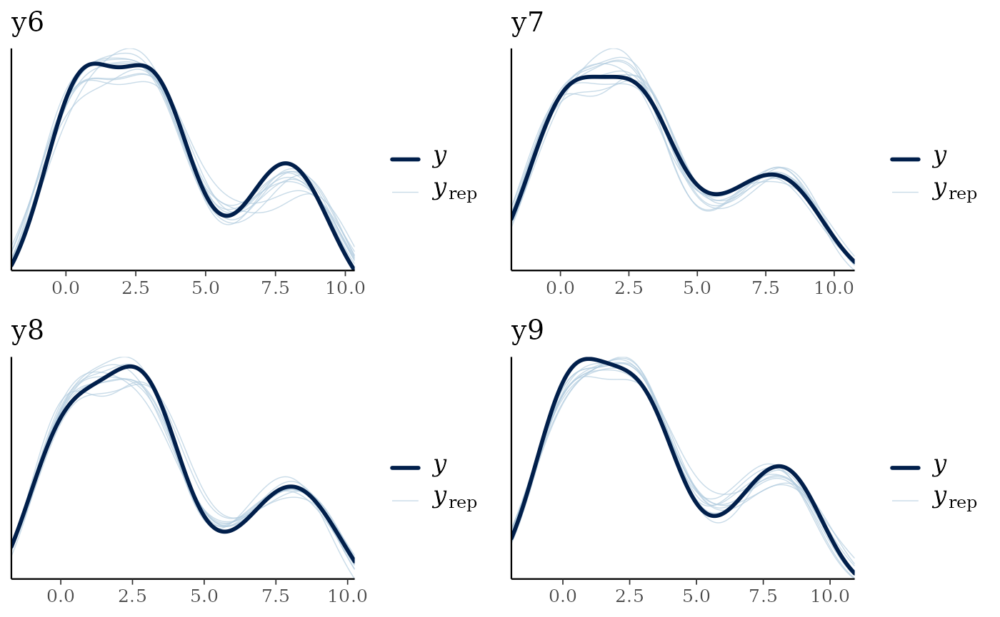
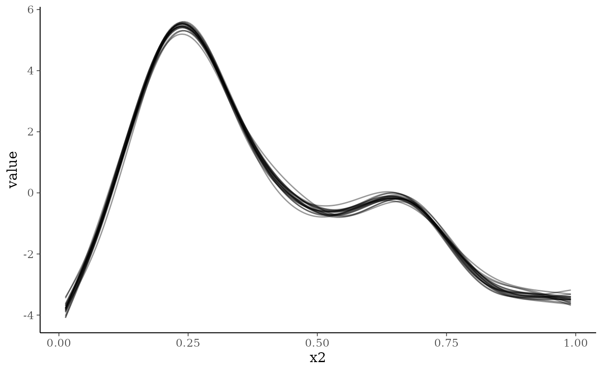
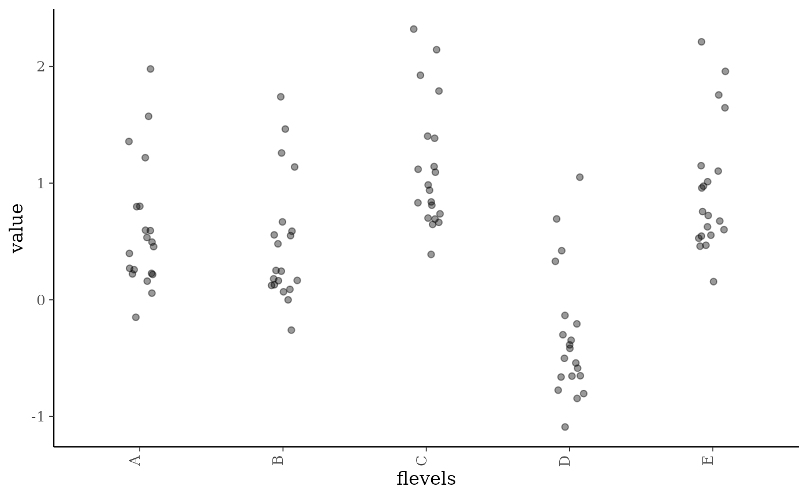
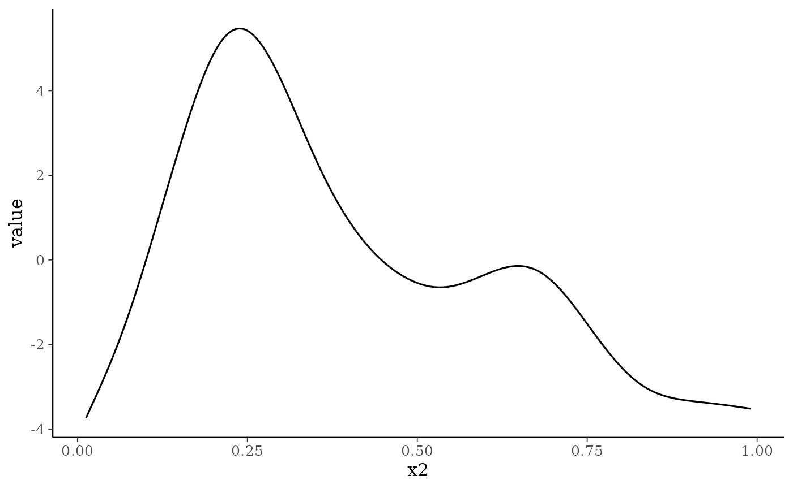
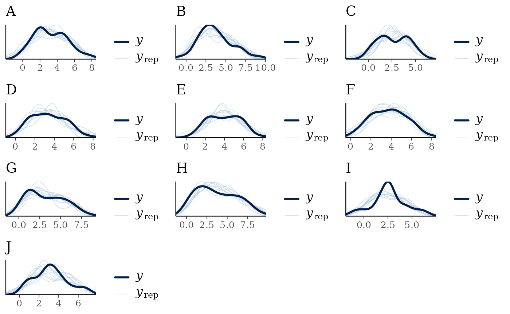
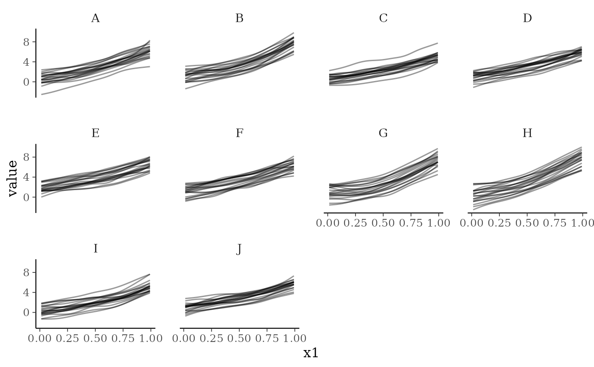

Fitting generalised additive models within jsdmstan
splines.RmdBackground
The jsdmstan package supports the fitting of non-linear
and random effects through using the generalised additive modelling
(GAM) approach as represented within the mgcv R package
(available on CRAN; Wood, 2011).
See Wood
(2025) for an overview of the GAM method. This means that the user
can specify splines by using the formula argument to
stan_jsdm() and including an s() call within
that formula to specify the spline structure. This can be done either at
the site-level (where multiple basis functions are supported) or at the
species-level by fitting a factor-smooth to species. Examples of this in
practice are shown below.
Site-specific splines
# 2 spline nfs testing ####
set.seed(2)
dat <- mgcv::gamSim(1,n=100,dist="normal",scale=2)
#> Gu & Wahba 4 term additive model
dat$flevels <- as.factor(rep(LETTERS[1:5],each=20))
dat$fvals <- rep(rnorm(5, sd = .5),each=20)
dat$y6 <- dat$f2 + dat$fvals + rnorm(100, sd=.5)
dat$y7 <- dat$f2 + dat$fvals + rnorm(100, sd=.5)
dat$y8 <- dat$f2 + dat$fvals + rnorm(100, sd=.5)
dat$y9 <- dat$f2 + dat$fvals + rnorm(100, sd=.5)
Y <- dat[,c("y6","y7","y8","y9")]Model fit, specifying priors for beta (representing the intercept only, in this case) based upon the data:
nfs_fit <- stan_jsdm(~s(x2) + s(flevels, bs = "re"), data = dat,
Y = Y, family ="gaussian", method = "mglmm",
prior = jsdm_prior(betas = "normal(3,1)"),
iter = 1000)
#>
#> SAMPLING FOR MODEL 'anon_model' NOW (CHAIN 1).
#> Chain 1:
#> Chain 1: Gradient evaluation took 0.000161 seconds
#> Chain 1: 1000 transitions using 10 leapfrog steps per transition would take 1.61 seconds.
#> Chain 1: Adjust your expectations accordingly!
#> Chain 1:
#> Chain 1:
#> Chain 1: Iteration: 1 / 1000 [ 0%] (Warmup)
#> Chain 1: Iteration: 100 / 1000 [ 10%] (Warmup)
#> Chain 1: Iteration: 200 / 1000 [ 20%] (Warmup)
#> Chain 1: Iteration: 300 / 1000 [ 30%] (Warmup)
#> Chain 1: Iteration: 400 / 1000 [ 40%] (Warmup)
#> Chain 1: Iteration: 500 / 1000 [ 50%] (Warmup)
#> Chain 1: Iteration: 501 / 1000 [ 50%] (Sampling)
#> Chain 1: Iteration: 600 / 1000 [ 60%] (Sampling)
#> Chain 1: Iteration: 700 / 1000 [ 70%] (Sampling)
#> Chain 1: Iteration: 800 / 1000 [ 80%] (Sampling)
#> Chain 1: Iteration: 900 / 1000 [ 90%] (Sampling)
#> Chain 1: Iteration: 1000 / 1000 [100%] (Sampling)
#> Chain 1:
#> Chain 1: Elapsed Time: 9.335 seconds (Warm-up)
#> Chain 1: 9.853 seconds (Sampling)
#> Chain 1: 19.188 seconds (Total)
#> Chain 1:
#>
#> SAMPLING FOR MODEL 'anon_model' NOW (CHAIN 2).
#> Chain 2:
#> Chain 2: Gradient evaluation took 8.9e-05 seconds
#> Chain 2: 1000 transitions using 10 leapfrog steps per transition would take 0.89 seconds.
#> Chain 2: Adjust your expectations accordingly!
#> Chain 2:
#> Chain 2:
#> Chain 2: Iteration: 1 / 1000 [ 0%] (Warmup)
#> Chain 2: Iteration: 100 / 1000 [ 10%] (Warmup)
#> Chain 2: Iteration: 200 / 1000 [ 20%] (Warmup)
#> Chain 2: Iteration: 300 / 1000 [ 30%] (Warmup)
#> Chain 2: Iteration: 400 / 1000 [ 40%] (Warmup)
#> Chain 2: Iteration: 500 / 1000 [ 50%] (Warmup)
#> Chain 2: Iteration: 501 / 1000 [ 50%] (Sampling)
#> Chain 2: Iteration: 600 / 1000 [ 60%] (Sampling)
#> Chain 2: Iteration: 700 / 1000 [ 70%] (Sampling)
#> Chain 2: Iteration: 800 / 1000 [ 80%] (Sampling)
#> Chain 2: Iteration: 900 / 1000 [ 90%] (Sampling)
#> Chain 2: Iteration: 1000 / 1000 [100%] (Sampling)
#> Chain 2:
#> Chain 2: Elapsed Time: 11.738 seconds (Warm-up)
#> Chain 2: 10.187 seconds (Sampling)
#> Chain 2: 21.925 seconds (Total)
#> Chain 2:
#>
#> SAMPLING FOR MODEL 'anon_model' NOW (CHAIN 3).
#> Chain 3:
#> Chain 3: Gradient evaluation took 9e-05 seconds
#> Chain 3: 1000 transitions using 10 leapfrog steps per transition would take 0.9 seconds.
#> Chain 3: Adjust your expectations accordingly!
#> Chain 3:
#> Chain 3:
#> Chain 3: Iteration: 1 / 1000 [ 0%] (Warmup)
#> Chain 3: Iteration: 100 / 1000 [ 10%] (Warmup)
#> Chain 3: Iteration: 200 / 1000 [ 20%] (Warmup)
#> Chain 3: Iteration: 300 / 1000 [ 30%] (Warmup)
#> Chain 3: Iteration: 400 / 1000 [ 40%] (Warmup)
#> Chain 3: Iteration: 500 / 1000 [ 50%] (Warmup)
#> Chain 3: Iteration: 501 / 1000 [ 50%] (Sampling)
#> Chain 3: Iteration: 600 / 1000 [ 60%] (Sampling)
#> Chain 3: Iteration: 700 / 1000 [ 70%] (Sampling)
#> Chain 3: Iteration: 800 / 1000 [ 80%] (Sampling)
#> Chain 3: Iteration: 900 / 1000 [ 90%] (Sampling)
#> Chain 3: Iteration: 1000 / 1000 [100%] (Sampling)
#> Chain 3:
#> Chain 3: Elapsed Time: 10.69 seconds (Warm-up)
#> Chain 3: 10.143 seconds (Sampling)
#> Chain 3: 20.833 seconds (Total)
#> Chain 3:
#>
#> SAMPLING FOR MODEL 'anon_model' NOW (CHAIN 4).
#> Chain 4:
#> Chain 4: Gradient evaluation took 9.2e-05 seconds
#> Chain 4: 1000 transitions using 10 leapfrog steps per transition would take 0.92 seconds.
#> Chain 4: Adjust your expectations accordingly!
#> Chain 4:
#> Chain 4:
#> Chain 4: Iteration: 1 / 1000 [ 0%] (Warmup)
#> Chain 4: Iteration: 100 / 1000 [ 10%] (Warmup)
#> Chain 4: Iteration: 200 / 1000 [ 20%] (Warmup)
#> Chain 4: Iteration: 300 / 1000 [ 30%] (Warmup)
#> Chain 4: Iteration: 400 / 1000 [ 40%] (Warmup)
#> Chain 4: Iteration: 500 / 1000 [ 50%] (Warmup)
#> Chain 4: Iteration: 501 / 1000 [ 50%] (Sampling)
#> Chain 4: Iteration: 600 / 1000 [ 60%] (Sampling)
#> Chain 4: Iteration: 700 / 1000 [ 70%] (Sampling)
#> Chain 4: Iteration: 800 / 1000 [ 80%] (Sampling)
#> Chain 4: Iteration: 900 / 1000 [ 90%] (Sampling)
#> Chain 4: Iteration: 1000 / 1000 [100%] (Sampling)
#> Chain 4:
#> Chain 4: Elapsed Time: 11.45 seconds (Warm-up)
#> Chain 4: 10.179 seconds (Sampling)
#> Chain 4: 21.629 seconds (Total)
#> Chain 4:
#> Warning: Bulk Effective Samples Size (ESS) is too low, indicating posterior means and medians may be unreliable.
#> Running the chains for more iterations may help. See
#> https://mc-stan.org/misc/warnings.html#bulk-ess
#> Warning: Tail Effective Samples Size (ESS) is too low, indicating posterior variances and tail quantiles may be unreliable.
#> Running the chains for more iterations may help. See
#> https://mc-stan.org/misc/warnings.html#tail-essThere’s a couple of warnings on ESS, so we’ll check to see what is going on by printing the model object to the console:
nfs_fit
#> Family: gaussian
#> With parameters: sigma
#> Model type: mglmm
#> Number of species: 4
#> Number of sites: 100
#> Number of predictors: 0
#>
#> Model run on 4 chains with 1000 iterations per chain (500 warmup).
#>
#> Parameters with Rhat > 1.01, or Neff/N < 0.05:
#> mean sd 15% 85% Rhat Bulk.ESS Tail.ESS
#> lp__ -134.182 23.739 -158.558 -110.844 1.01 285 384There are several parameters with ESS < 500, but the ESS is always over 400 which should be fine for our purposes. Now we can look at model recovery of the data, using the standard jsdmstan functions. We’ll just take a look to see if the model recovers the individual species distributions:
multi_pp_check(nfs_fit)
#> Using 10 posterior draws for ppc plot type 'ppc_dens_overlay' by default.
The model seems to recover the data well. We can also plot out the
smooth effects using the smoothplot() function. This
returns a list of ggplot2 objects including plots for each smooth
fitted. For smooths such as the default thin-plate regression spline or
e.g. a cyclic cubic regression spline this will take the form of a
series of lines representing different draws from the model. For random
effect splines this takes the form of a jittered point plot of the
random effect values plotted against the random effect categories. The
number of draws can be varied, and a summary line added to the line
plots if required.
smoothplot(nfs_fit)
#> [[1]]
#>
#> [[2]]
To demonstrate some of the smoothplot options, here we’ll plot the average smooth from 1000 draws for the first smooth (not the random effect):
smoothplot(nfs_fit, summarise = mean, ndraws = 1000,
select_smooths = list(site = 1))
#> [[1]]
Species- and site-specific factor smooths
Simulate data, based upon the factor-smooth example in the
mgcv::gam() documentation:
set.seed(0)
## simulate data...
f1 <- function(x,a=2,b=-1) exp(a * x)+b
n <- 500;nf <- 6
fac <- as.factor(rep(LETTERS[1:nf],each=50))
x1 <- rep(runif(50),nf)
a <- rnorm(nf)*.2 + 2;b <- rnorm(nf)*.5
f <- f1(x1,a[fac],b[fac])
fac <- factor(fac)
y <- f + rnorm(n)
#> Warning in f + rnorm(n): longer object length is not a multiple of shorter
#> object lengthSo response depends on a smooth of x1 for each level of fac, which we now convert the data into wide format:
df <- data.frame(x1 = x1[1:50])
Y <- matrix(y, nrow = 50)
colnames(Y) <- LETTERS[1:10]We fit the model by specifying species as the factor
within a factor-smooth model. Species doesn’t need to be in the original
dataframe (and obviously cannot be!) as jsdmstan recognises
what is going on and sorts it all out under the hood. Note that if
species is a column name in the original dataframe it will
be ignored and instead the model fit to vary across the columns of Y.
Specifying any other column name as the factor within the factor-smooth
means that jsdmstan will fit a site-specific factor instead.
fs1_fit <- stan_jsdm(~s(x1, species, bs = "fs"), data = df, Y = Y,
family = "gaussian", method = "mglmm", iter = 1000)
#>
#> SAMPLING FOR MODEL 'anon_model' NOW (CHAIN 1).
#> Chain 1:
#> Chain 1: Gradient evaluation took 0.001499 seconds
#> Chain 1: 1000 transitions using 10 leapfrog steps per transition would take 14.99 seconds.
#> Chain 1: Adjust your expectations accordingly!
#> Chain 1:
#> Chain 1:
#> Chain 1: Iteration: 1 / 1000 [ 0%] (Warmup)
#> Chain 1: Iteration: 100 / 1000 [ 10%] (Warmup)
#> Chain 1: Iteration: 200 / 1000 [ 20%] (Warmup)
#> Chain 1: Iteration: 300 / 1000 [ 30%] (Warmup)
#> Chain 1: Iteration: 400 / 1000 [ 40%] (Warmup)
#> Chain 1: Iteration: 500 / 1000 [ 50%] (Warmup)
#> Chain 1: Iteration: 501 / 1000 [ 50%] (Sampling)
#> Chain 1: Iteration: 600 / 1000 [ 60%] (Sampling)
#> Chain 1: Iteration: 700 / 1000 [ 70%] (Sampling)
#> Chain 1: Iteration: 800 / 1000 [ 80%] (Sampling)
#> Chain 1: Iteration: 900 / 1000 [ 90%] (Sampling)
#> Chain 1: Iteration: 1000 / 1000 [100%] (Sampling)
#> Chain 1:
#> Chain 1: Elapsed Time: 68.082 seconds (Warm-up)
#> Chain 1: 42.463 seconds (Sampling)
#> Chain 1: 110.545 seconds (Total)
#> Chain 1:
#>
#> SAMPLING FOR MODEL 'anon_model' NOW (CHAIN 2).
#> Chain 2:
#> Chain 2: Gradient evaluation took 0.001321 seconds
#> Chain 2: 1000 transitions using 10 leapfrog steps per transition would take 13.21 seconds.
#> Chain 2: Adjust your expectations accordingly!
#> Chain 2:
#> Chain 2:
#> Chain 2: Iteration: 1 / 1000 [ 0%] (Warmup)
#> Chain 2: Iteration: 100 / 1000 [ 10%] (Warmup)
#> Chain 2: Iteration: 200 / 1000 [ 20%] (Warmup)
#> Chain 2: Iteration: 300 / 1000 [ 30%] (Warmup)
#> Chain 2: Iteration: 400 / 1000 [ 40%] (Warmup)
#> Chain 2: Iteration: 500 / 1000 [ 50%] (Warmup)
#> Chain 2: Iteration: 501 / 1000 [ 50%] (Sampling)
#> Chain 2: Iteration: 600 / 1000 [ 60%] (Sampling)
#> Chain 2: Iteration: 700 / 1000 [ 70%] (Sampling)
#> Chain 2: Iteration: 800 / 1000 [ 80%] (Sampling)
#> Chain 2: Iteration: 900 / 1000 [ 90%] (Sampling)
#> Chain 2: Iteration: 1000 / 1000 [100%] (Sampling)
#> Chain 2:
#> Chain 2: Elapsed Time: 64.795 seconds (Warm-up)
#> Chain 2: 42.44 seconds (Sampling)
#> Chain 2: 107.235 seconds (Total)
#> Chain 2:
#>
#> SAMPLING FOR MODEL 'anon_model' NOW (CHAIN 3).
#> Chain 3:
#> Chain 3: Gradient evaluation took 0.001306 seconds
#> Chain 3: 1000 transitions using 10 leapfrog steps per transition would take 13.06 seconds.
#> Chain 3: Adjust your expectations accordingly!
#> Chain 3:
#> Chain 3:
#> Chain 3: Iteration: 1 / 1000 [ 0%] (Warmup)
#> Chain 3: Iteration: 100 / 1000 [ 10%] (Warmup)
#> Chain 3: Iteration: 200 / 1000 [ 20%] (Warmup)
#> Chain 3: Iteration: 300 / 1000 [ 30%] (Warmup)
#> Chain 3: Iteration: 400 / 1000 [ 40%] (Warmup)
#> Chain 3: Iteration: 500 / 1000 [ 50%] (Warmup)
#> Chain 3: Iteration: 501 / 1000 [ 50%] (Sampling)
#> Chain 3: Iteration: 600 / 1000 [ 60%] (Sampling)
#> Chain 3: Iteration: 700 / 1000 [ 70%] (Sampling)
#> Chain 3: Iteration: 800 / 1000 [ 80%] (Sampling)
#> Chain 3: Iteration: 900 / 1000 [ 90%] (Sampling)
#> Chain 3: Iteration: 1000 / 1000 [100%] (Sampling)
#> Chain 3:
#> Chain 3: Elapsed Time: 64.688 seconds (Warm-up)
#> Chain 3: 42.398 seconds (Sampling)
#> Chain 3: 107.086 seconds (Total)
#> Chain 3:
#>
#> SAMPLING FOR MODEL 'anon_model' NOW (CHAIN 4).
#> Chain 4:
#> Chain 4: Gradient evaluation took 0.00132 seconds
#> Chain 4: 1000 transitions using 10 leapfrog steps per transition would take 13.2 seconds.
#> Chain 4: Adjust your expectations accordingly!
#> Chain 4:
#> Chain 4:
#> Chain 4: Iteration: 1 / 1000 [ 0%] (Warmup)
#> Chain 4: Iteration: 100 / 1000 [ 10%] (Warmup)
#> Chain 4: Iteration: 200 / 1000 [ 20%] (Warmup)
#> Chain 4: Iteration: 300 / 1000 [ 30%] (Warmup)
#> Chain 4: Iteration: 400 / 1000 [ 40%] (Warmup)
#> Chain 4: Iteration: 500 / 1000 [ 50%] (Warmup)
#> Chain 4: Iteration: 501 / 1000 [ 50%] (Sampling)
#> Chain 4: Iteration: 600 / 1000 [ 60%] (Sampling)
#> Chain 4: Iteration: 700 / 1000 [ 70%] (Sampling)
#> Chain 4: Iteration: 800 / 1000 [ 80%] (Sampling)
#> Chain 4: Iteration: 900 / 1000 [ 90%] (Sampling)
#> Chain 4: Iteration: 1000 / 1000 [100%] (Sampling)
#> Chain 4:
#> Chain 4: Elapsed Time: 71.877 seconds (Warm-up)
#> Chain 4: 42.469 seconds (Sampling)
#> Chain 4: 114.346 seconds (Total)
#> Chain 4:
#> Warning: Bulk Effective Samples Size (ESS) is too low, indicating posterior means and medians may be unreliable.
#> Running the chains for more iterations may help. See
#> https://mc-stan.org/misc/warnings.html#bulk-ess
#> Warning: Tail Effective Samples Size (ESS) is too low, indicating posterior variances and tail quantiles may be unreliable.
#> Running the chains for more iterations may help. See
#> https://mc-stan.org/misc/warnings.html#tail-essThere is one warning about effective sample size, so we can print the model object to see which parameters had low ESS:
fs1_fit
#> Family: gaussian
#> With parameters: sigma
#> Model type: mglmm
#> Number of species: 10
#> Number of sites: 50
#> Number of predictors: 0
#>
#> Model run on 4 chains with 1000 iterations per chain (500 warmup).
#>
#> No parameters with Rhat > 1.01 or Neff/N < 0.05An effective sample size of over 200 seems like it should be fine for our purposes here, although you may want to run for more iterations if this was to be used for more than instructional purposes.
The recovery of the data can be evaluated by using functions such as
pp_check() or multi_pp_check(). This model
seems to recover the data well.
multi_pp_check(fs1_fit)
#> Using 10 posterior draws for ppc plot type 'ppc_dens_overlay' by default.
For factor smooths the smoothplot() function returns a
ggplot2 object facetted by the factor (here species, but within the
site-specific factor smooths this could be any factor specified by the
user).
smoothplot(fs1_fit)
#> [[1]]
Comments
A mix of site-specific and species-specific smooths can also be fit, as can many different types of smooth basis functions. Not all types of smooth basis functions have been tested yet, and it is entirely possible that some smooths will be fit that cannot be plotted or predicted correctly from - please raise an issue at https://github.com/NERC-CEH/jsdmstan/issues if you run into any problems or have a type of smooth that you’d like to be able to fit but cannot.
References
Wood, S.N. (2011) Fast stable restricted maximum likelihood and marginal likelihood estimation of semiparametric generalized linear models. Journal of the Royal Statistical Society (B) 73(1):3-36
Wood, S.N. (2025) Generalized Additive Models. Annual Review Statistics and Its Application. 12:497-526. https://doi.org/10.1146/annurev-statistics-112723-034249